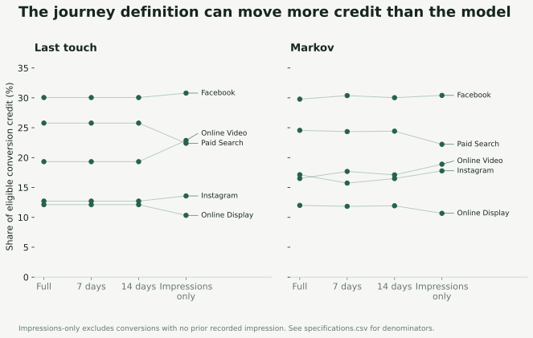
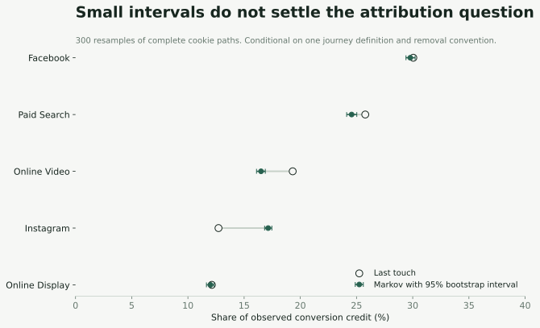

Marketing attribution · Python · SQL
Who deserves
the conversion?
One sale. Several channels. The closing event tells only part of the story.
Trace the credit- Jul 19FacebookImpression
- Jul 24Paid SearchImpression
- Jul 25Online VideoConversion event
The first recorded event belongs to Facebook.
Which question should the report answer?
The interesting result is a ranking that moves.
Facebook leads all six models. Instagram is more complicated: its share rises from 12.7% under last touch to 17.1% under Markov, enough to overtake Online Video. Shorten the lookback to seven days and Video moves ahead again.
I would use that disagreement to choose the next measurement question. I would not turn the Markov result directly into a spending recommendation.
Main analysis: 17,639 conversions across 240,108 recorded cookie paths in July 2018. Event-based attribution includes the conversion channel tag. Read the data provenance and measurement scope.
Same path. Different answers.
A marketing lead is deciding where to investigate growth. The final channel looks productive in the conversion report. Earlier channels ask for credit too. Before comparing the channels, I want to make the rule visible.
In the journey below, Facebook appears first, Paid Search and Display recur, and Instagram carries the conversion event. Last touch awards everything to Instagram. Linear attribution gives one sixth to each event, so the channels with repeated appearances receive more than one sixth overall.
- @@PATH@@
Credit for this conversion
Observed path 1. Source CSV rows 1377-1382.
Last touch assigns 100% to the final event's channel. These are recorded events, not click records.
None of these rules proves which impression persuaded the customer. They answer different accounting questions: where the recorded path began, where it ended, or how to share credit across the events we can see. Even “first touch” means first recorded touch in this extract, not necessarily the acquisition source.
Instagram's role changes
when the model changes.
I compared five transparent rules with a first-order Markov chain. The chain uses both converting and non-converting paths to describe transitions between channels. It then measures how the fitted conversion probability changes when a channel is removed under a stated convention.
Instagram gets 4.4 percentage points more credit under Markov than under last touch. It also appears earlier without being the closing channel in 2,343 converting paths, compared with 520 for Online Video. That makes its role in multi-channel journeys worth inspecting. These counts overlap across channels and do not measure incremental sales.
Markov versus last touch
17,639 eligible conversions · 240,108 paths · full observed path
Markov shares are normalized removal scores. They allocate observed credit; they are not incremental conversion estimates.
Inspect the six-model comparison
| Channel | First | Last | Linear | Position | Decay | Markov |
|---|
Facebook's leading share is stable across the six models: 29.3%-30.1%. Its size alone does not tell me whether more spend would be profitable. Instagram's shift is the more useful diagnostic because it reveals a disagreement about channel roles.
Third place depends on the clock.
The full-path Markov result puts Instagram slightly ahead of Online Video: 17.1% versus 16.5%. With a seven-day lookback, the order reverses: 15.7% versus 17.7%. Fourteen days also leaves Video ahead.
Full path: Instagram ranks third. Both shares use all 17,639 conversions.
A shorter window drops older recorded events. It does not change which conversions happened. That distinction makes this a useful stress test: the same outcome total supports a different middle-of-the-table ranking.
I also checked duplicates, timestamp ambiguity and a later-starting cohort. Retaining duplicates leaves the collapsed Markov result unchanged. Excluding cookies with ambiguous ordering keeps Instagram narrowly ahead. Among cookies first seen July 8 onward, Video leads. That cohort changes both the population and available follow-up, so it is a boundary diagnostic rather than a clean validation sample.

The 30-day result matches the full path because the file spans only July. It tells us nothing about customer journeys lasting longer than this extract. Inspect every specification and denominator.
What if the closing tag is
all we recorded?
7,417 of 17,639 conversions have no earlier recorded impression. Their only event is the conversion.
The main model includes the channel attached to each conversion event. For those 7,417 paths, first touch, last touch, linear, position based and decay must all give credit to the same channel. Their agreement is built into the data, so it should not be mistaken for five independent confirmations.
When I remove the conversion event and attribute only to earlier impressions, 10,222 conversions remain eligible. The other 7,417 stay unassigned. In that specification, Online Video receives 22.9% of last-touch credit and 18.9% under Markov. Instagram's Markov share is 17.8%, so Video stays ahead.
This is partly a change in model input and partly a change in who is included. Comparing those shares directly with the full-path shares would hide that population change. Use “Impressions only” in the explorer above to see its eligible base.
“No recorded impression” is a coverage statement.
It does not mean the customer saw no advertising. The journey could start before July, happen on another device, or include channels outside this file. The next useful measurement work is to clarify how impressions and conversion tags are collected and joined.
Removal is an assumption,
not an experiment.
For Markov, I create START, the five channel states, CONVERSION and a terminal meaning no conversion observed. I collapse consecutive appearances of the same channel, count transitions across all 240,108 cookie paths, and fit the transition probabilities.
To remove Instagram, I redirect transitions that would enter Instagram to the non-conversion terminal. Then I solve for conversion probability again. I repeat this for each channel and normalize the removal scores into shares of the 17,639 observed conversions.
That convention matters. A real customer might substitute another channel after Instagram disappears. The chain does not observe that alternative. Its first-order assumption also ignores much of the path history and timing. It describes the fitted journey network; it does not estimate the lift from a real advertising intervention.
See the calculation and removal convention
Q = P[transient_states, transient_states]
r = P[transient_states, conversion_state]
probability = solve(I - Q, r)[START]
# For each removed channel c:
# redirect incoming probability to the non-conversion terminal;
# do not renormalize the surviving transitions.
effect[c] = 1 - probability_without_c / probability
share[c] = effect[c] / sum(effect)Inspect the Python implementation and download the transition matrix.

The intervals describe sampling variation under this fixed specification. They cannot repair incomplete journeys or establish causality. The short-window ranking change matters even when the individual share estimates look precise.
The next decision
Investigate the assist.
Measure the increment.
My recommendation is to investigate Instagram's earlier role and validate the measurement before using its credit gain to move money. Its contribution is plausible within the observed network, but its ranking is sensitive to the clock and the event definition.
I would first reconcile impressions, conversion tags and cookie identity against the source tracking setup. Then, if a stable eligibility population can be defined, test an Instagram exposure policy against a randomized holdout. Retain Online Video as a comparison worth testing rather than treating the full-path ranking as settled.
- Define the intervention
- Specify campaign eligibility, exposure suppression and the control policy. Analyze assignment to treatment, with consistent conversion tracking in both groups.
- Measure the business outcome
- Incremental conversions and net contribution value per eligible person or account. Collect spend, margins, refunds and deduplicated outcomes so lift can be compared with cost.
- Protect the decision
- Check holdout contamination, tracking completeness and cross-channel substitution. Set a baseline, minimum worthwhile effect, sample size and observation window before launch.
- Move spend only with evidence
- Increase budget when estimated incremental contribution exceeds added cost with acceptable uncertainty. Attribution share alone does not provide that comparison.
The file has no spend, margin or randomized exposure data. I therefore do not calculate ROAS, claim an optimal allocation, or promise a measured lift. The analytical value is a clearer test priority and an explicit account of what could change the decision.
Discuss attributionFollow the credit back
to the calculation.
The project begins with a business case and analysis protocol. The source is checksum-verified; rule allocations conserve conversion counts and recorded value; an independent SQLite query reconciles first and last event credit with Python. Nine unit tests cover model behavior on small, inspectable examples.

The explorers use saved analysis outputs. Choices change the displayed model or journey definition locally; they do not send data or fit a new model. The path examples carry source CSV row references. Cookie identifiers represent recorded browsers rather than verified people; a terminal without conversion means no conversion in this extract.
Method context: Google's attribution overview and Tao et al. on removal effects. This case uses an independently implemented first-order chain, not GA4's proprietary attribution model.